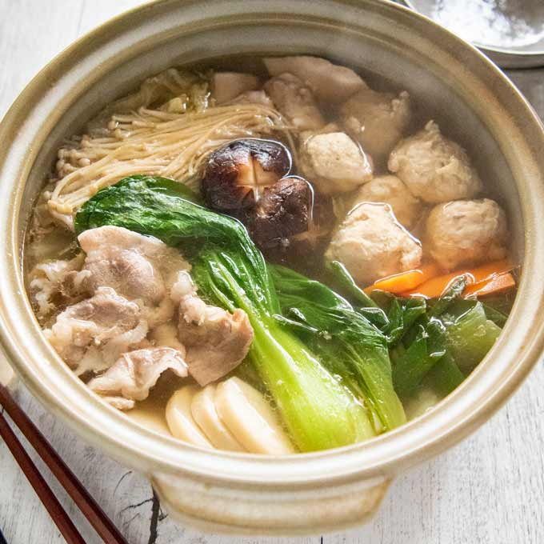

Chankonbe Recipe

Description
Chankonabe is a Japanese stew (a type of nabemono or one-pot dish) commonly eaten in vast quantity by sumo wrestlers as part of a weight-gain diet.
Ingredients
- Chicken thighs
- Chicken meatballs
- Fish filet
- Fish balls
- Crab
- Shrimp
- Slice pork belly
- Bacon
- Sausages
- Tofu
- Konnyaku
- Garlic
- Kimchi
- Sesame seeds
- Vegetables
- Mushrooms
- Udon noodles
Steps
Make the Broth
- Gather all the Ingredients
- Combine chicken broth, sake, mirin, ginger juice
- Transfer broth
- Add mixture
Make the Chicken Meatballs
- Gather the Ingredients
- Combine everything
- Cut the stew Ingredients
Set up the Table
Cook and enjoy the broth